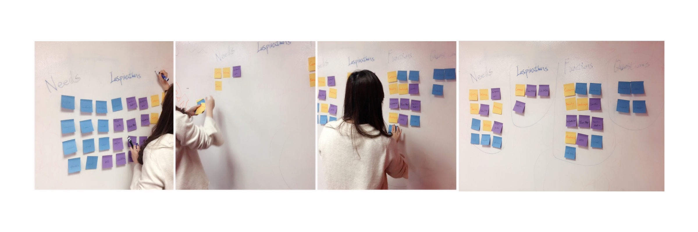

APP
VOCO is a mobile app that provides the landmark spots and the example photos for tuorists. By using vote system and positioning system, people can easily navigate themselves to the spot and take a picture as the reference photo.
PROJECT
ROLE
TOOL
TIME
BACKGROUND
People love photography for many reasons. We use photos to capture memories and moments, to tell stories, communicate with others and then improving us as a photographer.
Here comes the question, when you travel to an unfamiliar city, how do you figure out where are the landmarks and how to pose, and how to make sure that the photographer takes your photos as you want?
POINT OF VIEW
Tourists have seen people taking really awesome pictures at the places they are going to visit, and they want to try to get the same effect. But people need a way to locate the insta-worthy landmarks in trips and they don’t know how to explain the style they want.
PROPOSAL
My solution is to develop a mobile app that provides the landmark spots and the example photos for people. By using vote system and positioning system, people can easily navigate themselves to the spot and take a picture as the reference photo.
STORY BOARD
TARGET AUDIENCE
PERSONAS
CARD SORTING
So, after deciding the features which I was going to provide, I asked people to perform a closed card sorting exercise for me so that, I can understand their thinking and behaviour properly. I asked them to writer down their needs and expectation of the app and then I sort them to into "Needs“, "Inspiration", "Functions", "Questions" four categories. Then I measure the frequencies of the features in a particular category which helped me to create the sitemap.
USER RESEARCH
Once the concept was developed, I conducted user interveiws and survey for the further research. Most of the interviewers are belongs to my primary target audience.
MOBILE WIREFRAMES
IWATCH WIREFRAMES
PROTOTYPE
STYLE GUIDE
PROMOTION


© 2018 QIANQIAN W.| All Right Reserved.